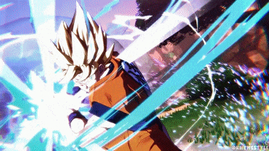
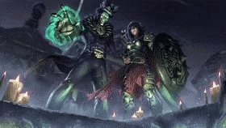
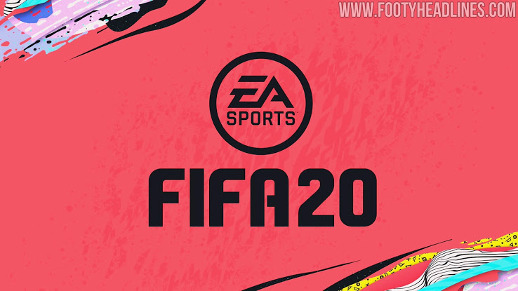
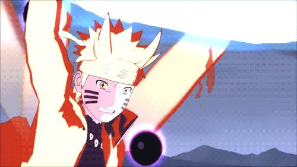
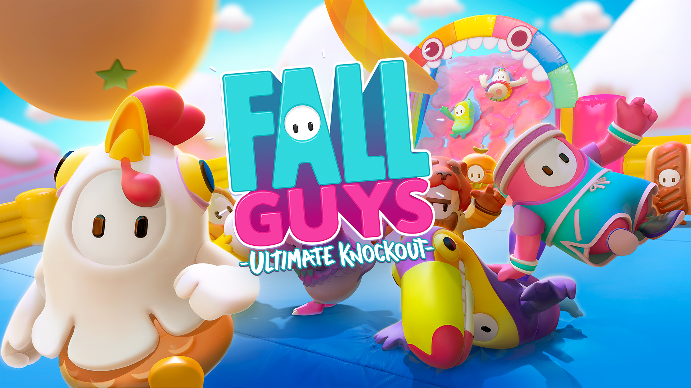

DRAGONBALL FIGHTERZ

Dragon Ball FighterZ involves the player picking a team of 3 playable characters and a unique assist for each, then fighting an AI or human opponent with their own team of 3 characters. The game received positive reviews from critics, with many citing the game as one of the best fighting games released in the eighth generation of video game consoles. The game's fighting system, character roster, visuals, story mode, and music were all highly praised while its online functionality was criticized.
Call of Duty®: Modern Warfare®

The game takes place in a realistic and modern setting. The campaign follows a CIA officer and British SAS forces as they team up with rebels from the fictional country of Urzikstan, combating together against Russian forces who have invaded the country. The game's Special Ops mode features cooperative play missions that follow up the campaign's story. The multiplayer mode supports cross-platform multiplayer and cross-platform progression for the first time in the series. It has been reworked for gameplay to be more tactical and introduces new features, such as a Realism mode that removes the HUD as well as a form of the Ground War mode that now supports 64 players.
SMITE!

Smite features many different game modes with the largest being Conquest. Players are formed into two teams with five players on each team. All players begin at opposite sides of a map at their team's "fountain". Before the players enter the map, they are granted an amount of gold to buy starting items. These items grant special bonuses or abilities that enhance the player's god. There are three continuous "lanes" running from one side of the map to the other.
Fifa

FIFA 21 is a football simulation video game published by Electronic Arts as part of the FIFA series. It is the 28th installment in the FIFA series, and was released 9 October 2020 for Microsoft Windows, Nintendo Switch, PlayStation 4 and Xbox One.
Naruto Shippuden Ultimate Ninja Storm 4

Naruto Shippuden: Ultimate Ninja Storm 4, known in Japan as Naruto Shippūden: Narutimate Storm 4 (Japanese: NARUTO-ナルト- 疾風伝ナルティメットストーム 4, Hepburn: Naruto Shippūden: Narutimetto Sutōmu 4), is the sixth and final installment of the Ultimate Ninja Storm series, this is a fighting game developed by CyberConnect2 and published by Bandai Namco Entertainment for PlayStation 4, Xbox One, and Steam in February 2016. It is the direct sequel to Naruto Shippuden: Ultimate Ninja Storm 3.
Fall Guys: Ultimate Knockout

Fall Guys: Ultimate Knockout is a platformer battle royale game developed by Mediatonic and published by Devolver Digital. It released for Microsoft Windows and PlayStation 4 on 4 August 2020